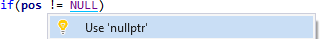
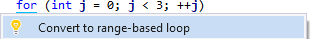
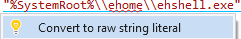

Code Inspection
Code Inspection analyzes code for specific quality issues as you edit. The feature, based on LLVM/Clang, warns you of issues in your code and if possible, suggests and applies quick fixes.



Enable Code Inspection in the options dialog for Visual Assist.
Learn more.